显示屏左上方出现的动态示意图标，表示当前车辆后方距离障碍物的距离。图示中车辆最外层为绿色线，往内逐渐为黄色线和红色线，当障碍物距离车辆越来越近时，颜色线条将逐条靠近车辆模型。
此动态示意图标的变化与距离参考警报声的变化同步进行。
倒车雷达系统借助超声波传感器发送和接收超声波，利用发送和遇障碍物反射回来的超声波测算车辆与障碍物的距离。
后雷达车型：
–整车电源在“ON”挡位时，解除电子驻车制动，并将换挡杆挂入“R”挡，当车速小于10km/h，后部超声波传感器进入工作。
–当车速大于12km/h时，后部超声波传感器退出工作；将换挡杆切换至“P”挡，施加驻车制动，整车电源退出“ON”挡位，后部超声波传感器也退出工作。
前雷达车型：
–整车电源在“ON”挡位时，解除驻车制动，并将换挡杆切换至“R”挡，当车速小于10km/h，倒车雷达系统进入工作。
–当车辆前进速度小于10km/h，前部超声波传感器进入工作；当车辆前进速度大于12km/h时，前部超声波传感器退出工作；当车辆前进速度从12km/h以上降到10km/h以下时，前部超声波传感器再次进入工作。
–当车速大于12km/h时，前部与后部超声波传感器退出工作；将换挡杆切换至“P”挡，施加驻车制动，整车电源退出“ON”挡位，前部与后部超声波传感器也退出工作。
显示屏左上方出现的动态示意图标，表示当前车辆后方距离障碍物的距离。图示中车辆最外层为绿色线，往内逐渐为黄色线和红色线，当障碍物距离车辆越来越近时，颜色线条将逐条靠近车辆模型。
此动态示意图标的变化与距离参考警报声的变化同步进行。
显示屏左上方出现的动态示意图标，表示当前车辆后方距离障碍物的距离。图示中车辆最外层为绿色线，往内逐渐为黄色线和红色线，当障碍物距离车辆越来越近时，颜色线条将逐条靠近车辆模型。-橙色-黄色-黄色，当障碍物距离车辆越来越近时，颜色线条将逐渐从最外层减少。
此动态示意图标的变化与距离参考警报声的变化同步进行。
在倒车过程中，倒车雷达系统已开启的情况下，在全景界面按键①可手动关闭系统，再按一下则重新开启。重新启动车辆后倒车雷达系统会自动开启。
建议进行倒车操作时开启倒车雷达。
某些环境下，如周围有大货车、公交车等大型车辆气刹时，前雷达传感器受其他可产生同频率超声波的电器设备或装置的影响，可能会导致误报或无法正常工作。
报警声随着障碍物与前后保险杠之间的距离变化，同时在音响系统显示屏上显示的颜色也相应变化。


前部超声波雷达传感器安装在前保险杠罩上。（横格栅车型)

前部超声波雷达传感器安装在前保险杠罩上。（竖格栅车型）

后部超声波雷达传感器安装在后保险杠罩上。（横格栅车型）

后部超声波雷达传感器安装在后保险杠罩上。（竖格栅车型）
–应始终保持超声波传感器表面干净，切勿遮盖住超声波传感器。
–为保证保险杠上的超声波传感器功能，须保持其清洁并避免结冰。
–清洁超声波传感器表面时，应使用柔软的湿布，避免刮伤表面。
–倒车雷达系统不能取代驾驶员对周围环境的观察，驾驶员应集中注意力，根据实际情况安全倒车和调整车位。
–超声波传感器在探测障碍物时存在盲区，倒车时，驾驶员必须注意观察，避免发生刮擦或碰撞事故。
–在狭窄场所或上坡倒车时，超声波传感器可能探测到栏杆、树木或斜坡面，此属正常现象。
–倒车速度较快时，超声波传感器探测准确性有所下降，建议倒车速度不超过10km/h。倒车雷达系统持续发出警报声时，此时车辆与障碍物已极其接近，须立即停止倒车，谨防发生事故。
–用高压清洗器清洗超声波传感器时，应短时轻柔，喷嘴与传感器至少保持30cm以上的距离。
–若有水珠附着在保险杠上的超声波传感器表面，则传感器的灵敏度会有所下降，拭去附着在传感器上的水珠即可恢复其灵敏度。
–某些物品的表面不能反射超声波传感器发出的信号，导致超声波传感器探测不到此类物品或身着此类服装的人。
–车外噪音源可能干扰超声波传感器，导致探测不到物体。
–超声波传感器属精密部件，切勿私自拆装维修。因私自拆装维修所导致的损坏，本公司概不承担质量担保。
— 页面到底了 —